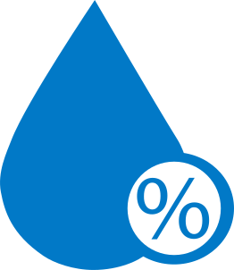

{{tempo.temp}}
ºC
Máx {{tempo.forecast[0].max}}º
Mín {{tempo.forecast[0].min}}º
Mín {{tempo.forecast[0].min}}º
{{tempo.description | uppercase}}
EM {{tempo.city_name | uppercase}}
 {{tempo.humidity}} % |
 {{tempo.wind_speedy}}
{{tempo.wind_speedy}}